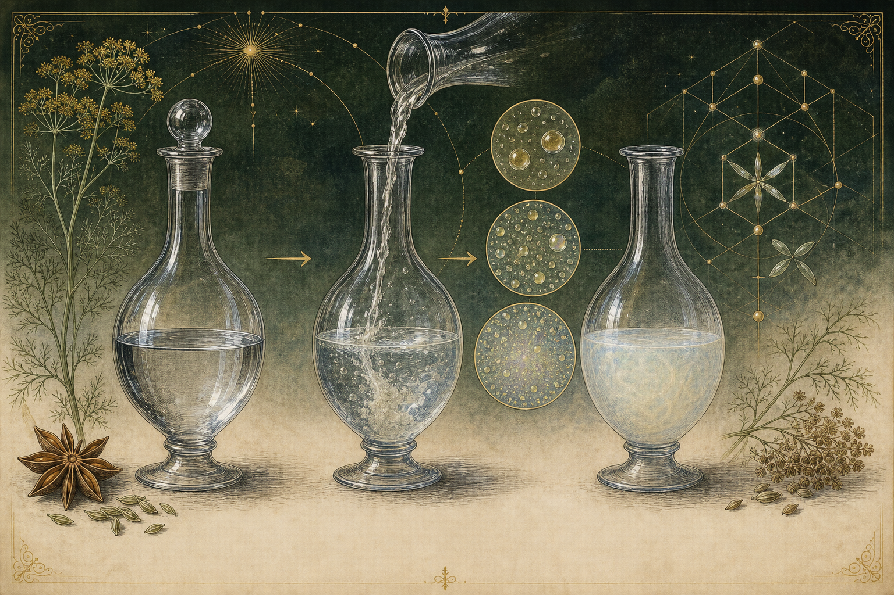
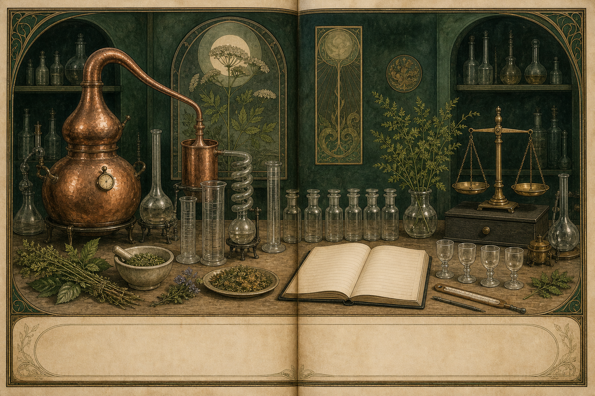
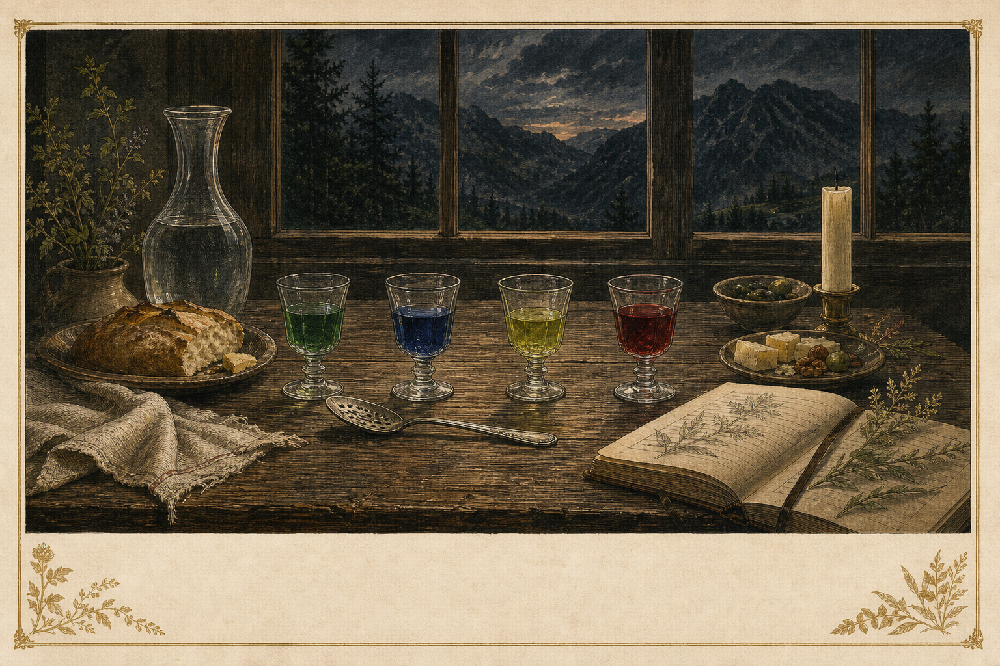

The green volume
Nowhere's End
A Book of Potions
What begins as a bitter plant becomes a spirit, a ritual, a myth, and a way of seeing.
A living manuscript · 12 × 12 in · 2026

Open the green hour
There is a moment before the water: the bottle is closed, the glass is clear, and the plant exists only as a promise carried by aroma. The spoon waits. The room has not yet changed.
Then water enters. The spirit loses its transparency and gains a weather. Oils gather into droplets; light breaks; bitterness becomes atmosphere. This is the first potion in the book—not a claim of escape, but a visible passage from one state to another.
Follow that passage backward into the plant and forward into the hand. The same hand will open an archive, turn a leaf in Monument soil, measure a cloud at the bench, enter the rooms of myth, and return with water and food. Along the way, the book asks what is documented, what is plausible, what is inherited as myth, and what Nowhere's End has made for itself.
The plant gives the command. The water reveals the gate. The glass records the passage.
For the edition
The book has a body.
Its folios, plates, captions, sources, and large-format specifications live together in the print manifest.
Follow the hand through the volume
A bitter plant becomes a drink, the drink becomes a ritual, the ritual becomes a myth, and the myth returns to the laboratory. The reader is not outside that sequence: each book changes what the hand knows how to notice.
Receive the potion
Begin with color, aroma, proof, spoon, water, and the first change in the glass.
Recover the plant
Leave the café for wormwood’s older uses, contested origins, markets, bans, and return.
Grow the question
Put names beside specimens, harvest dates beside plant parts, and romance beside weather.
Make the invisible legible
Read the louche, the oil, the proof, and the pharmacology as observations with limits.
Enter the rooms of meaning
Let art, literature, music, Revelation, and Crowley enlarge the symbol without disguising the archive.
Return changed
Repeat the serve, share food, keep the record, and bring the question back to ordinary life.
The object in the glass
You begin with four glasses. Absinthe is not one color, one recipe, or one story; it is a family of decisions about plants, plant parts, alcohol, water, proof, time, and the hand that pours. Verte, Bleue, Detour, and Crimson will recur as four figures while the book changes rooms around them.
First path
Verte · The Green Hour
Wormwood, anise, fennel, hyssop, and the classic cloud.
Enter the formulaSecond path
Bleue · The Clear Bloom
Blue atmosphere, dry herbs, proof, and the discipline of clarity.
Enter the formulaThird path
Detour · The Yellow Route
Lemon balm, citrus, resin, and a turn away from heavy licorice.
Enter the formulaFourth path
Crimson · The Flowering Shadow
Hibiscus, rosehip, spice, tartness, and the red finish.
Enter the formulaThe bottle at the threshold
The bottle is the first boundary. Inside it, plants have been reduced to a vocabulary of perfume, bitterness, heat, and color; outside it, they become a choice made by the person who pours. A label can name the spirit, but it cannot finish the potion. The glass, the spoon, the water, and the pace of the hand complete the sentence.
Begin with the untouched pour. Hold it to the light. Note whether it is green, blue, yellow, red, or nearly clear; note what rises first from the glass; note whether the alcohol arrives before the herb. Then add water and let the liquid write its second state. The louche is not decoration. It is the bottle revealing its hidden architecture.

- Opening still life
- Vocabulary of color
- Four-potion plate
- Classic drip sequence — see the chapter
- Glossary of service — ritual folios
- House formula references — source room
Wormwood before the bottle
You leave the glass for the archive. Before absinthe was a café order, wormwood was a plant with a long memory. Its bitterness moved through medicine, household practice, agriculture, and appetite. The modern spirit did not invent the plant; it arranged the plant into a machine of aroma.
The history begins in more than one place. Val-de-Travers is essential, but no single origin legend can hold the whole geography of absinthe: alpine valleys, border trade, military medicine, colonial circulation, industrial production, the café, the ban, and the return.
The complete history of absinthe
Wormwood did not begin as a brand. Long before the green hour had a café vocabulary, Artemisia absinthium was encountered as a bitter plant: medicinal, household, agricultural, and culinary. The later spirit inherited this bitterness and gave it a new public form—distilled, diluted, sweetened when desired, and performed at the table.
The modern history is a crossing of places rather than a single birth certificate. Alpine valleys, border trade, distillers, military routes, colonial campaigns, industrial factories, wine markets, temperance movements, and artists all altered what absinthe meant. The ban did not erase the drink; it changed its geography and forced its memory underground. The revival returned not to one pure original, but to a disputed archive.
Our history therefore keeps two sentences beside each other: this is what the record shows, and this is what the legend wants. The distance between them is where the Green Fairy learned to fly.

- Wormwood in antiquity — chapter 05
- Val-de-Travers and competing origins — history room
- Dubied, Pernod, and industrial scale — history room
- Empire, army, and water — history room
- Phylloxera and the wine question — history room
- Temperance, bans, and revival — open the chapter
Plants are not ingredients until they are known
From the archive, the hand enters the garden. A name is not a specimen. These pages keep the common name beside the Latin name, the plant part beside the harvest date, and the desired note beside the uncertainty. Monument, Colorado becomes one of the book's laboratories: a place where elevation, frost, water, and patience argue with the recipe.
The living index
Wormwood, green anise, fennel, hyssop, lemon balm, angelica, coriander, mint, chamomile, and the supporting plants.
Enter the herb libraryThe local experiment
Climate, containers, perennials, annuals, drying, storage, and sourced botanicals.
Enter Absinthe GardenBotanical plates and garden calendar
A garden is a formulation written in time. The seed is a delayed ingredient; the soil is an extraction medium; the harvest is a decision about which part of the plant is allowed to enter the bottle. In Monument, elevation and frost make the calendar part of the recipe. What thrives here is not automatically what belongs in a distillate, and what belongs in a distillate may still need to be sourced elsewhere.
Every plate in this section shows the plant whole before it shows the plant cut: name, family, Latin identity, plant part, growing habit, harvest window, drying method, and the sensory role it is asked to play. The garden is not a romantic backdrop. It is a chain of custody—and the first place where the hand learns that patience is an ingredient.


- Plant-part plate
- Monument growing plate
- Drying and storage record — Absinthe Garden
- Seed and source ledger — herb library
- Seasonal garden calendar
- Herb-to-molecule index — herb library
When clear becomes cloud
The harvested plant now meets the bench. The louche is a small weather system: a spirit that looked transparent becomes opalescent as water changes the balance between ethanol, water, and essential oils. Trans-anethole is a principal actor, but it is not the entire cast. Temperature, proof, concentration, extraction method, and the behavior of other oils all decide what the cloud becomes.
The glass is therefore an instrument. It tells the hand what changed, but not by itself why. That answer belongs to the bench: controlled dilution, repeated observations, alcoholometry, and analytical testing.
The louche bench and the different drunk
To louche is to make an invisible mixture visible. Ethanol can carry oils that water cannot; when the balance changes, the oils leave solution and gather into tiny droplets. Light scatters through those droplets and the spirit becomes cloud, opal, milk, or weather. Trans-anethole is central to the anise-fennel story, but the louche is a system, not a single magic number.
The bench asks a quieter question than the myth asks: not “what does absinthe unlock?” but “what changed between these two glasses?” We compare proof, oil load, extraction method, temperature, dilution rate, water hardness, color, aroma, and time. Pharmacology receives the same discipline: thujone, fenchone, alcohol, bitterness, expectation, and ritual are separated before they are interpreted together.
Now carrying the bench record, the hand enters the cultural rooms. A different drunk may be pharmacological, sensory, dose-and-proof related, social, or shaped by expectation. Here the book permits the psychedelic reading as culture and experience while labeling the boundary before crossing it.

- Oil–water phase diagram — mechanism plate
- Trans-anethole threshold study — documented protocol
- Cold extraction comparison — actuals ledger linked
- ABV and water-temperature matrix — bench design
- Thujone evidence ladder — see the chapter
- Expectation, ritual, and subjectivity — psychoactivity room
The green muse enters the room
Absinthe became more than a beverage because it was always more than a beverage in public. It arrived with a glass, a spoon, a color, a time of day, a café table, and a vocabulary ready to become legend. Artists and writers did not merely record the drink; they helped give it a face.
Here the book turns toward art, literature, music, Revelation, Crowley, and the modern language of altered states—without confusing a symbolic transformation with a pharmacological result.
Art, literature, and music
The Green Fairy is partly a drink and partly a room arranged around the drink. Paintings preserve the posture of the sitter; literature preserves the sentence that follows the first glass; music preserves duration—the long interval in which a color changes and a thought begins to associate.
This cultural section does not use art as evidence that absinthe caused genius, madness, or revelation. It asks how an object becomes available to the imagination. A falling star may be a biblical image, a label ornament, a personal emblem, or a marketing device. Its meaning changes with the frame.
The hand may enter Crowley’s theater, but Crowley remains a chamber within the book, not its governing voice. The archive stays visible; the psychedelic interpretation stays named as interpretation.


- Paintings and café scenes — art room
- Literary passages and provenance — literary room
- Revelation and apsinthos — Revelation room
- Crowley: text and interpretation — dossier
- Cabaret and chanson — listening room
- Four potion sound-worlds — listening briefs
The potion is made twice
After the rooms of myth, the hand returns to the workbench. First in the formula, then in the record, a house potion becomes real when its ingredients, weights, proof, extraction, color, aroma, louche, and actuals can be returned to. These pages teach the hand to repeat what the imagination began.
Nothing here is true merely because it is beautiful. Beauty is the reason to look closely; the ledger is what lets us look again.

Recipes, ritual, and return
A recipe is a promise made precise. The ounce, the water, the temperature, the glass, and the pause are not the opposite of magic; they are the conditions that let a sensory event be noticed and repeated. The practical pages bring the four potions back to the table without pretending that a ritual is therapy.
Serve the clear before the colored. Smell before dilution. Let the louche happen in its own time. Record what the glass does, then record what you imagine it does. The distinction is not an insult to imagination. It is how imagination stays honest.
The final ritual is a return: food, water, conversation, and the ordinary room restored. Even the fire chapter ends without fire touching the drink. The symbol may burn; the glass need not.

- Four finished potion cards — formula rooms
- Green Beast and Sazerac — ritual folios
- N/A Bloom — N/A room
- Four-glass flight
- The Unlit Flame — fire folio
- Colophon and index — source room
Return
The glass is empty. The plants remain. The hand has passed through bottle, archive, garden, bench, and myth, and returned to the table. Outside, the evening has not become supernatural; it has become more legible.
Close the book with water, food, and a question worth carrying back into the garden.
What happens when a bitter plant becomes a drink, then a myth, then a chemical system, then a personal ritual?